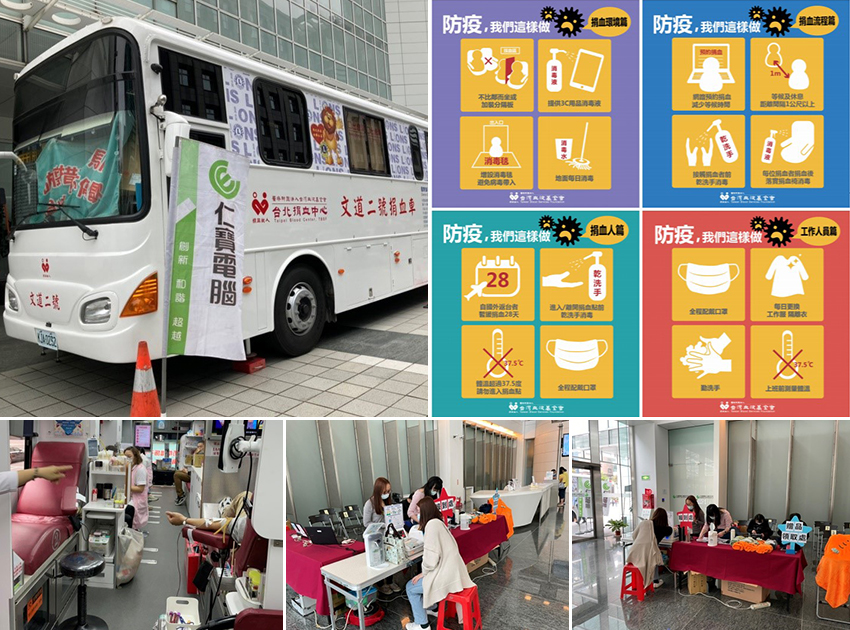

【捐血活動】防疫不忘捐血，疫情下熱情不滅
│ 員工關係部
台灣自2020年COVID-19流行後，開始進入防疫期間，直接影響了彼此的生活，也限制了人們的活動，進而降低大家外出捐血的意願，但全台的血液使用量卻不會因此減少。尤其在疫情嚴峻時，充足的醫療用血是國人生命健康安全的強力後盾與支援。因此，宣導正確的防疫資訊及提供安心的捐血環境是相當重要的。
為使醫院有充足的庫存量，員工關係部在疫情期間仍持續辦理捐血活動，並同步落實相關防疫措施，如：維持社交距離、酒精消毒、佩帶口罩、實名制…等。疫情期間至今已舉辦2場捐血活動，總計參與人數：285人；總捐血袋數：430袋，共107,500cc，在大家熱血參與下，每每都讓捐血中心滿載而歸，實質的幫助到有需要病患。為秉持救人互助的精神，讓每個人都有發揮關懷社會的機會，將愛心傳播出去，為社會盡一份心力，員工關係部將持續舉辦此活動。
|  |